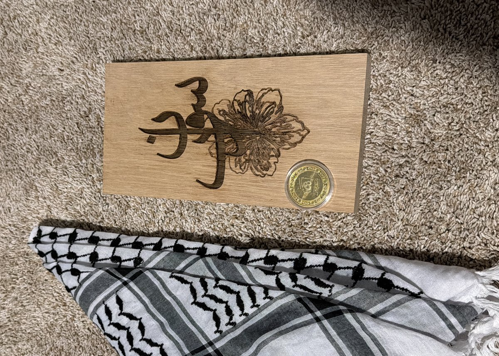

Woven on one of the last remaining mechanical looms in Palestine. A symbol of resistance and identity. Included in this month's April box. Also available separately.

Crafted by women artisans in Ramallah and Bethlehem using traditional beading and knotting techniques. Features Palestinian flag colors. Included in this month's April box.

Hand-burned Arabic calligraphy intertwined with floral motifs on natural oak. Each piece takes ~6 hours. Made by a woodworker in Bethlehem. Included in this month's April box.

Gold-tone coin engraved with "Allah" in Arabic script. Traditional metal-stamping techniques with Islamic geometric borders. A pocket-sized daily reminder of faith. In this month's April box.

Hand-stitched tatreez on natural canvas. Each tote is a collaboration between a designer and a Palestinian embroiderer in the West Bank. Fully fair-wage, fully traceable.

Wild thyme, sesame, sumac. Blended by women cooperatives in Jenin. Certified fair trade. Family farms only. Available on Amazon and at Whole Foods Market.

Traditional Hebron glasswork patterns adapted to clay. Each piece glazed and kiln-fired by a single artisan family in the Old City of Hebron. One of a kind.

Single-origin, organic, cold-pressed. From olive trees that are sometimes hundreds of years old. Ships from Jenin. Fair Trade certified. Also available via Zatoun.

Woven in a family-run studio using traditional floor looms. Natural linen, indigo block-print border. Nöl works hyper-locally with family sewing workshops and women's cooperatives.
Woven on one of the last remaining mechanical looms in Palestine. A symbol of resistance and identity — now a vehicle for artisan income. Comes with a story card.

Traditional cold-process Lebanese soap with 90 years of heritage. Made with olive oil and laurel berry oil by a single family workshop in Beirut. No synthetic additives.

Wild Lebanese za'atar, sumac, chamomile, and sage — hand-harvested from mountain farms and dried naturally. Three pouches, each labeled with harvest location.
Crafted using traditional Lebanese pottery techniques. Each piece hand-thrown and painted with regional floral and geometric motifs. Dishwasher-safe glaze.

Made from natural jute using traditional Sudanese weaving techniques. Each bag takes a full day to weave. Sourced from artisan cooperatives in Khartoum and Omdurman.
A blend of roasted nuts, coriander, cumin, and sesame — a Sudanese kitchen staple. Ground by hand and packed in fabric pouches. Ships from Khartoum.
Woven by craftswomen from the Ardabil region using natural-dyed wool. Traditional Iranian geometric patterns in rust, cream, and deep blue. Each runner is unique.